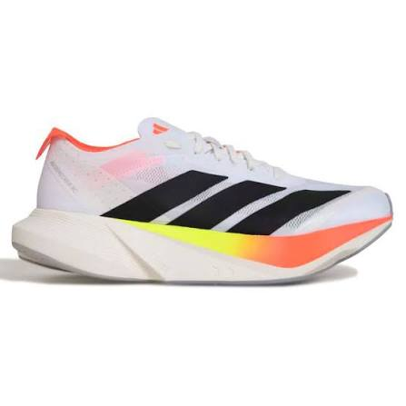
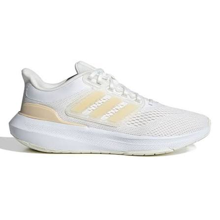

Explore o universo Adidas
A Adidas é uma marca esportiva reconhecida mundialmente por seus tênis, roupas e acessórios. Seus produtos aparecem tanto nos esportes quanto na moda urbana.

Conhecer os estilos
Conforto, desempenho e estilo em movimento.
A Adidas é uma marca esportiva reconhecida mundialmente por seus tênis, roupas e acessórios. Seus produtos aparecem tanto nos esportes quanto na moda urbana.
A Adidas é uma empresa alemã fundada por Adolf Dassler em 1949. A marca ficou conhecida pelas três listras presentes em muitos de seus produtos.
Seus calçados são encontrados em diferentes categorias, incluindo corrida, futebol, treinamento e uso casual.

Modelos desenvolvidos para quem gosta de correr e caminhar. O conforto e o ajuste são importantes na escolha.

Opções para passeios, escola e uso diário, combinando com diferentes roupas.

Calçados para atividades físicas, escolhidos de acordo com os exercícios realizados.
Um bom tênis deve combinar com a atividade que você pratica e oferecer conforto durante o uso.
| Categoria | Uso | Característica |
|---|---|---|
| Corrida | Corridas e caminhadas | Conforto |
| Casual | Passeios e rotina | Versatilidade |
| Treinamento | Exercício fisico | Estabilidade |